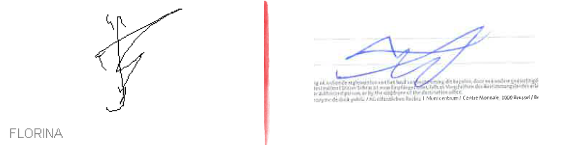

The Renaissance movement turned to the Police of France with an appeal about the Schengen visa fraud which took place in Belarus for 4 years.
In June 2016, the Judicial Police of France sent the appeal of the Renaissance to Europol which headquaters is located in the Netherlands.
On July 25, 2016 the Renaissance leader sent a registered letter (parcel No. RF036 839 587BE) to Europol, the Netherlands office, to inform about the change of his postal address. The official website of the Belgian post featured information about delivery of the letter No. RF036 839 587BE to the addressee on July 28, 2016. (It can be seen here or here).
Soon the sender received the delivery confirmation (avis de reception), however, this confirmation did not have neither the delivery date nor the recipient name, it also did not have any Netherlands post stamp (The document can be seen here).
The delivery confirmation contained only the recipient signature. And this circumstance raises doubts that the letter has actually been delivered to Europol.
The sender sent an email request about this issue to the Netherlands Post.
After that, information about the delivery of the letter No. RF036 839 587BE to the addressee has been featured on the Netherlands Post website. (This information can be found here or here). But the recipient signature provided at the Netherlands post website is not the same as on the delivery confirmation (avis de reception) of the Belgian post.
The sender turned to the Belgian post for explanations. More specifically, he asked to explain the reason of the two signatures not matching and of the absence of the Netherlands post stamp. "This is very strange" was the opinion of the official representative of the Belgian post.
In the opinion of the Renaissance movement, the letter has never been delivered to Europol. Probably, some other correspondence has been delivered there as a parcel No. RF036 839 587BE. Information about successful delivery has been published on the Belgian post website to mislead the sender. In this case, the representatives of the organized criminal group which had controlled the visa business, have power to manipulate the European post operations. The criminals use this method along with other methods to avoid publicity of the visa fraud and to interrupt communication of the Renaissance and the European Union authorities.
Below are the two signatures, one from the Belgian post delivery confirmation, and the other one from the Netherlands post website:

Last Name of the recipient can be seen on the Netherlands post website - Florina, and also the "F"-shaped signature.
But the delivery confirmation (avis de reception) contains a completely different signature.
However, when received, these two documents must have been signed by the same individual.
September 28, 2016
The Renaissance Movement